I. Abstract
In the place and route (P&R) flow, a router might still leave some nets open after routing is done. These opens are usually caused by ECO (Engineering Change Order) or some user changed design. Thus it is very helpful to have an automatic tool to detect if a net is still open after routing. Also, a tool should indicate the (shortest) paths to reconnect existing net shapes to resolve the open. Furthermore, the indicated paths must be obstacle-aware for that a path overlap with obstacles is not legitimate in a real case.
II. Problem Description
- This problem focuses on a single net with large scattered routed net shapes. The contestants are requested to generate paths to connect all these routed net shapes and vias while having minimum line length/via cost.
- Given a set of routed net shapes $R = \{R_1,R_2,…,R_j\}$, a set of routed net vias $V = \{v_1,v_2,…,v_k\}$, a set of obstacles $O = \{O_1,O_2,…,O_m\}$ on routing layers $L = \{M_1,V_1,M_2,V_2,…,V_{n-1},M_n\}$, with a design boundary $B$, spacing $S$ and via cost $C_v$
- Contestants are requested to find a set of paths $p = \{p_1, p_2,…,p_l\}$ to connect all routed net shapes $R$ and routed net vias $V$ together.
- Each path $p_i$ can be an H-line, a V-line or a via. Steiner points are allowed.
- Examples:
- As shown in Figure 1, the blue rectangles are the routed net shapes $R$ of a net containing some opens. Your goal is to output a set of paths to connect the existing net shapes to form a single connected component.
- The path set $p$ consists of red lines and orange vias. The path set in this figure is one of the valid outputs that contestants could generate.
- The gray rectangles are the obstacles $O$. The paths (line/via) should always keep a minimum spacing $S$ to these obstacles.
- The outmost rectangle is the design boundary $B$. The paths (line/via) should always keep a minimum spacing $S$ to it as well.
- Detailed Rules:
- Format of Shapes/Lines/Vias
- A point in this problem is expressed as a pair of non-negative integers.
- Points have no area and lines have no width (more explanations later).
- The routed net shapes $R$, obstacles $O$ and design boundary $B$ are always rectangles represented by their upper right (UR) and lower left (LL) corners.
- The routed net vias $V$ and your output vias are always points.
- Your output lines must be horizontal(y-equal) or vertical(x-equal) lines.
- Format of Metal/Via Layers
- Layers are stacked like those shown in Figure 2.
- All layers are aligned with the same coordinate system in the x and y axes.
- All the routed net shapes $R$ and obstacles $O$ and lines exist only on metal layers.
- A via on layer $V_{i-1}$ connects the same point of $M_{i-1}$ and $M_i$.
- Definition of Connection
| 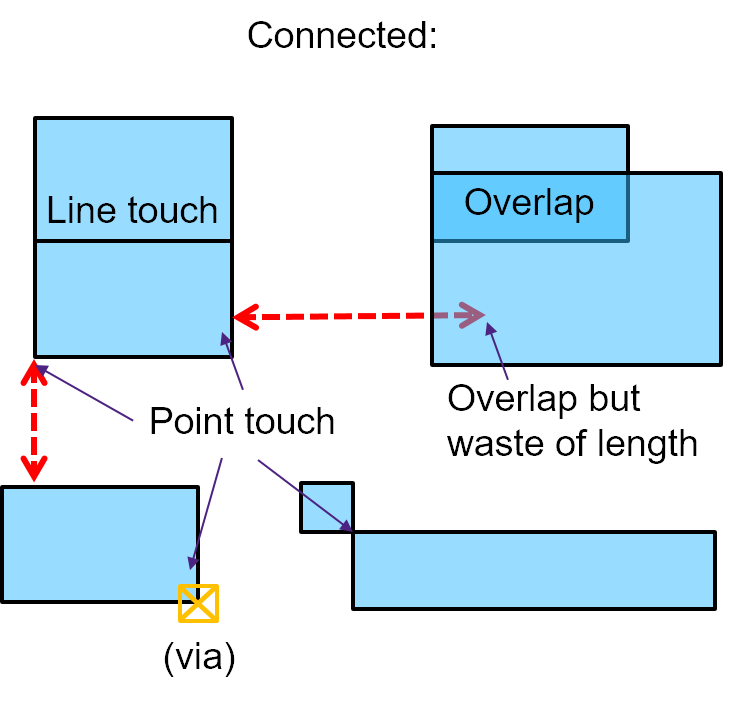 |
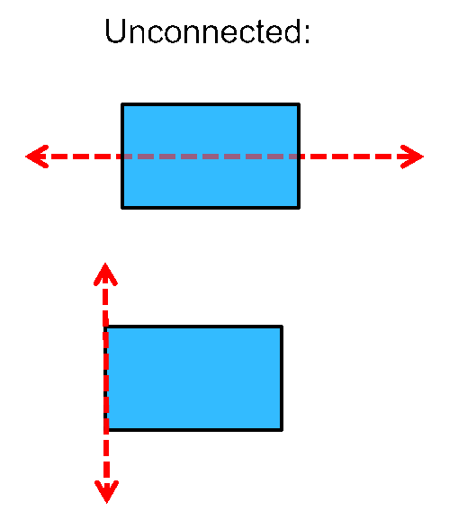 |
Figure3a. Lines connecting net shapes |
Figure3b. Lines not connecting net shapes |
- Any point touching between line/via/netShapes counts the connection.
- For Figure 3b, these two lines do not connect the existing net shapes because the end points of the lines are not on the routed net shapes.
- Stacked via is also considered as connected.
- Steiner point identification
| 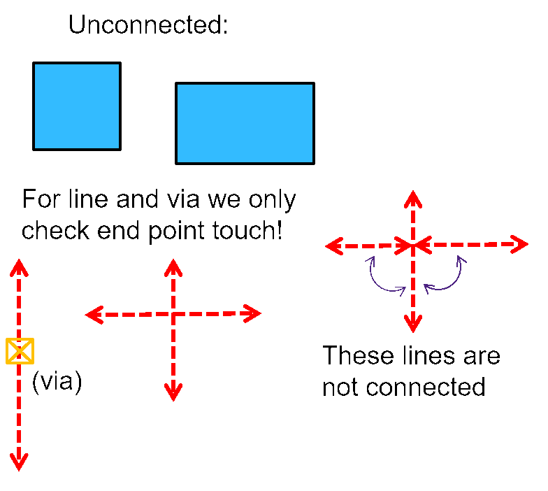 |
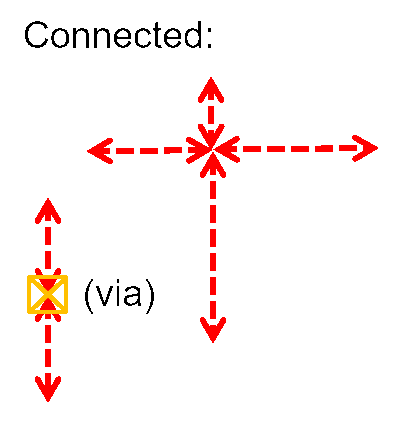 |
Figure4a. Lines and vias not conntected |
Figure4b. Lines and vias conntected |
- You should identify the location of Steiner point. For lines and vias, we only check if the end points are touched, as shown in Figure 4.
- Spacing to Obstacles and Boundaries
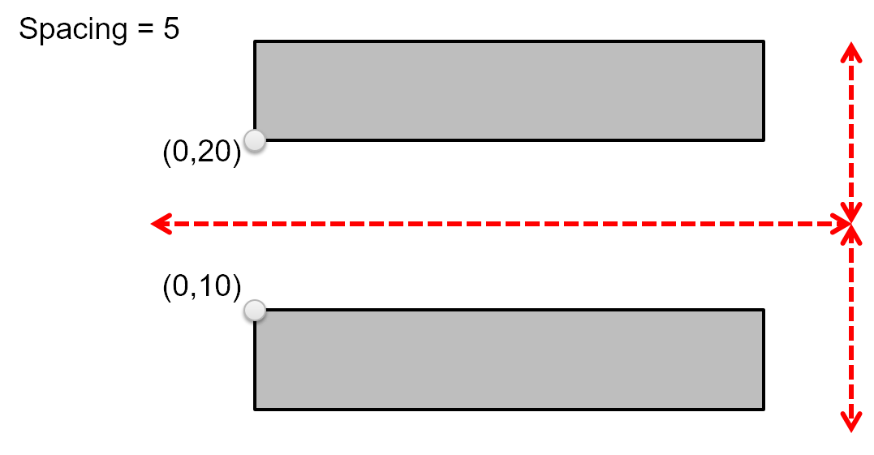
Figure5. valid path.
- As mentioned, a line in this problem has no width. So the path in Figure 5 is valid.
- You only need to consider the spacing to obstacles and boundaries because all routed net shapes and via are for the same net.
- The given routed net shapes/via will always keep a minimum spacing S to these obstacles and boundaries.
- Multi-threading Allowed and Encouraged.
- The maximum number of cores that can be used is 4.
III. Evaluation Methodology
- Overall $Cost=\sum\limits_{q=1}^t=Cost(p_q)+Disjoint \ cost$
- If $p_q$ is a H-line or V-line, Cost($p_q$) = length of this H-line or V-line.
- If $p_q$ is a via, Cost($p_q$) = $C_v$.
- The goal is to minimize the overall cost for each case.
- There are several things to notice:
- If the components are not connected as a single net:
$Disjoint\ cost = 2 \times (\#components - 1) \times (boundary\Delta X + boundary\Delta Y + \#ViaLayers \times C_v)$
($boundary\Delta X = UR_x-LL_x\ of\ B, boundary\Delta Y = UR_y-LL_y\ of\ B,\ and\ \#ViaLayers=\#MetalLayers-1$)
- Invalid paths would be discarded as shown Figure 6.
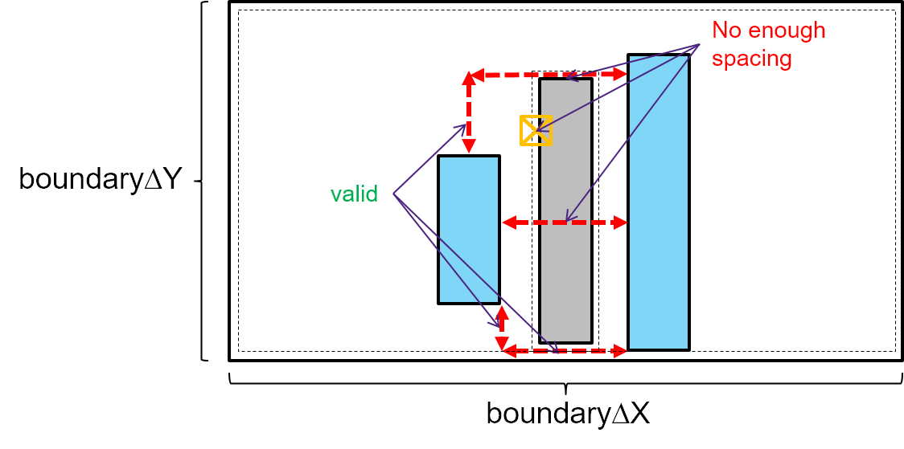
Figure6. Invalid paths
- Runtime bonus/penalty to overall cost
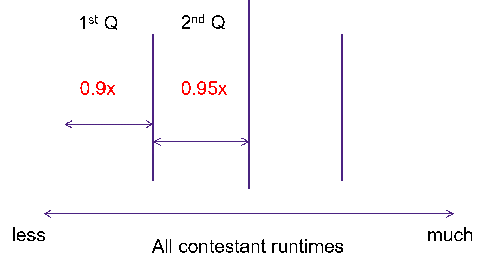
Figure8. Runtime bonus calculation
- We measure the runtime by the clock on the wall time.
- If your runtime is within (or equal to) the first quartile of all the runtime of the teams. Then there will be a bonus 10% off to your overall cost, as shown in Figure 8.
- If your runtime is within (or equal to) the second quartile of all the runtime of the teams. Then there will be a bonus 5% off to your overall cost.
- If your runtime is over 4hrs, then the output of that case will be discarded. The cost would be treated as though the net is disjoint (huge disjoint cost).
IV. Example
- Remember that Line Cost = length
- Input format:
ViaCost = Cv
Spacing = S
Boundary = (LLx,LLy) (URx,URy)
#MetalLayers = W
#RoutedShapes = X
#RoutedVias = Y
#Obstacles = Z
RoutedShape Layer (LLx,LLy) (URx,URy)
…
RoutedVia Layer (x,y)
…
Obstacle Layer (LLx,LLy) (URx,URy)
- You can output H-line/V-line/via in any order. But be careful about IO handling in multi-thread environment.
- Output Format:
H-line Layer (x1,y) (x2,y)
…
V-line Layer (x,y1) (x,y2)
…
Via Layer (x,y)
- Take Figure 1 for example, the input will be:
ViaCost = 20
Spacing = 5
Boundary = (0,0) (1000,1000)
#MetalLayers = 2
#RoutedShapes = 7
#RoutedVias = 1
#Obstacles = 3
RoutedShape M1 (50,100) (250,150)
RoutedShape M1 (600,20) (750,140)
RoutedShape M1 (50,850) (250,900)
RoutedShape M1 (10,800) (500,995)
RoutedShape M2 (75,20) (200,750)
RoutedShape M2 (375,100) (575,600)
RoutedShape M2 (475,20) (670,450)
RoutedVia V1 (175,125)
Obstacle M1 (350,300) (650,750)
Obstacle M1 (50,350) (650,650)
Obstacle M2 (350,700) (950,800)
-
Example output:
V-line M1 (700,140) (700,550)
H-line M2 (575,550) (700,550)
H-line M1 (500,850) (700,850)
Via V1 (700,550)
V-line M1 (700,550) (700,850)
H-line M2 (200,150) (375,150)
- Your program should be named net_open_finder and we can execute as follows:
./net_open_finder <input.txt> <output.txt>
V. Test Cases and Evaluator
- TestCase
- 3 cases are in the tgz file.
- Evaluator
- Contestants can use this evaluator to validate their output answer.
md5sum:
2db6d3247e209580803e4bc90ced5860 eval_3
Usage of evaluator:
" ./eval <case> <ans> " to evaluate and draw SVG.
or
" ./eval <case> " to draw SVG only.
It will generate per metal layer SVG files (named Mx.svg) in the executing path to help you visualize the problem.
You can open it by web browser like Chrome and FireFox.
For zoom-in zoom-out support, please install chrome extension
https://chrome.google.com/webstore/detail/svg-navigator/pefngfjmidahdaahgehodmfodhhhofkl
And check 'Allow access to file URLs' in the chrome://extensions/
-
TestCaseA
-
Hidden TestCases
VI. Alpha Test
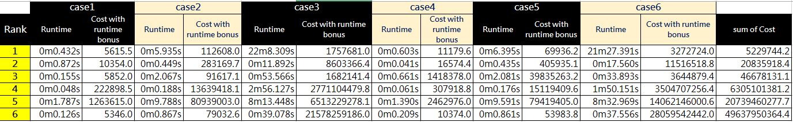
VII. Beta Test
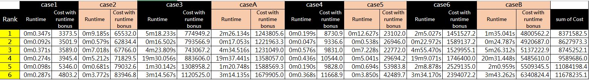
VIII. Reference
- Lin, Chung-Wei, et al. "Obstacle-avoiding rectilinear Steiner tree construction based on spanning graphs." IEEE Transactions on Computer-Aided Design of Integrated Circuits and Systems 27.4 (2008): 643-653.
- Liu, Chih-Hung, et al. "Efficient Multilayer Obstacle-Avoiding Rectilinear Steiner Tree Construction Based on Geometric Reduction." IEEE Transactions on Computer-Aided Design of Integrated Circuits and Systems 33.12 (2014): 1928-1941.
IX. FAQ
- What's the problem that I cannot execute the binary file in problem B when I use eval at my terminal?
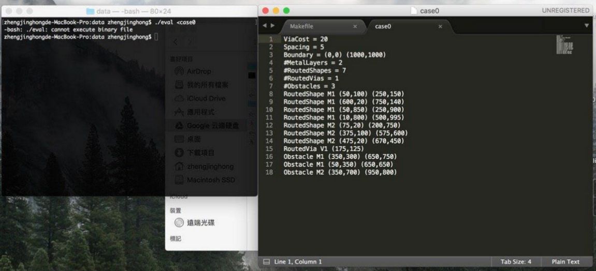
The evaluator binary is a Linux binary. Please run it on Linux OS. Linux distribution tested are RHEL 6.6 and Ubuntu 14.04 LTS.
-
In the given example, there are two routed shapes(on M2) overlapping. Should we consider they are both connected to the net if either of the shapes is connected to it?
Yes, because if two routed shape are overlapping, these two shapes form a connected component.
-
Is it possible in this problem that a routed shape overlap an obstacle or a via point is on an obstacle?
No. We guaranteed “The given routed net shapes/via will always keep a minimum spacing S to obstacles and boundaries.” In the problem description. Thus the overlapping of routed shape/ via to obstacle would never exist in the testcase.
-
Is there always one or more vias in any Via Layer?
I think you mean routed via. No, not guaranteed. But the via layer is always available for your (answer)via.
-
In public testcases, there are many overlapping Net shapes, and so are Obstacles. Is it general and legal?
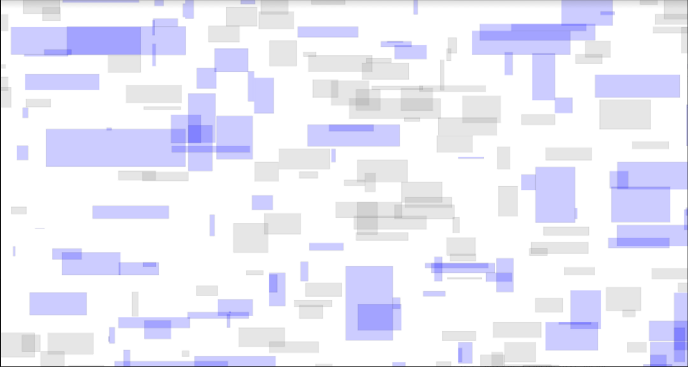
Yes, It is general and legal (as long as there is no overlapping between net shapes and obstacles).
-
Is the coordinate of all given shape, obstacle, via, generated line and via integer?
Yes, as described in the detailed rule: “A point in this problem is expressed as a pair of non-negative integers.”
-
As a contestant, I am so glad to write to you for few questions about the problem we chose, Net Open Location Finder with Obstacles. I wonder if we are allowed to directly import some open source package (or head file) that are published online as a reference or we have to write the algorithm all by ourselves?
Yes, you can use any open source package as long as being careful about any copylefts that package claims.
-
ViaCost = Cv
Spacing = S
Boundary = (LLx,LLy) (URx,URy)
#MetalLayers = W
#RoutedShapes = X
#RoutedVias = Y
#Obstacles = Z
RoutedShape Layer (LLx,LLy) (URx,URy)
...
RoutedVia Layer (x,y)
...
Obstacle Layer (LLx,LLy) (URx,URy)
What's the range(maximum and minimum value) of Cv, S, W, X, Y,Z and Boundary in the Input format?
For your question about Cv, S, W, X, Y, Z and Boundary in the Input format:
All their minimum value are clearly 0.
For the maximum value:
We guarantee #MetalLayer W to be less than or equal to 10.
ViaCost Cv, Spacing S, #RoutedVias Y to be less than or equal to 100.
#RoutedShapes X, #Obstacles Z to be less than 1 million (10^6).
And we guarantee that maximum value of Boundaries < UINT32_MAX.
-
In problem B, we used the evaluator to check our result, but we found that if we insert via at the position (x between obstacle's x1 and obstacle's x2 , obstacle's y2 + Spacing), for example, in case2, we insert Via V1 (10149,10083), evaluator will show that we insert invalid via. We think the lines have no width in this problem, via aligns the obstacle's boundary + Spacing should be valid.
You are right! This via is valid. This is a minor defect in our evaluator code. We have updated the Evaluator on our website.
-
How many cores can we use for multi-threading in the problem? Are the maximum number of cores equal to the number of cores in CIC machine?
The maximum number of cores that you can use is 4. It is equal to the number of cores in CIC machine.
-
Is it possible that the distance between Routed shape and Obstacles equals to Spacing S? or it must be longer than Spacing S?
It is possible that the distance between Routed shape and Obstacles equals to Spacing S. Equal to Spacing S is good enough.
-
I do not know #Comps，what is that?
It’s “Number of components after inserting answer paths”. If #Comps=1, it means your answer paths connect this net completely.
-
Are these six cases the final one or not?
No. Plan to add additional 2 large scale cases in beta test. One is public, one is hidden.
-
We found that the evaluation metric of problem B in alpha test is the sum of the cost of each case, which means the results of large-scaled cases would dominate the final score. Is this the original intention of the evaluation metric? If not, we wonder if it is possible to change the evaluation metric (for example, normalize the cost of each case, etc.) in beta and final test or not.
Yes it is our intention to have this kind of metric. In the real world EDA problems, almost all the cases are very large-scaled. So we don’t consider the small-scaled cases would be as important as the large-scaled one. And the different normalize method may partialize some cases or some team. Thus we add another two new large-scaled cases, caseA (public) and caseB (hidden). And hope you can focus on large-scaled cases.
-
Is TeseCase1/2/3 the testcase of AlphaTest case1/2/3? Is TaseCaseA the public case mentioned in answer to Q13?
1) Yes. 2) Yes.
-
We find some RoutedShapes have zero area in case1. Like this:
RoutedShape M3 (4380,243) (4543,243)
Is it legal?
Another question:
Is a Obstacle has zero area legal?
If it is legal and Spacing = 0, can a line cross the Obstacle?
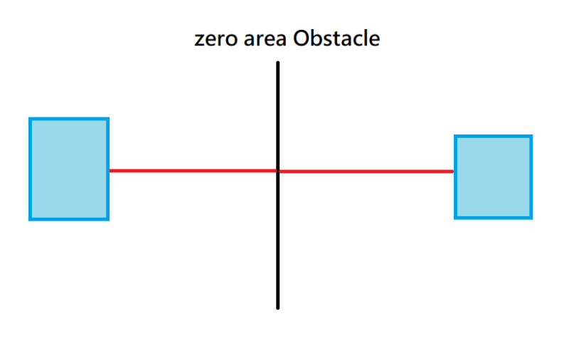
Zero area obstacle is legal. A line should still keep min spacing to obstacle. A line cross obstacle is invalid.
-
(1)Are there any via given in case connecting no RoutedShape? (2)If answer is yes, should we need to connect these vias to other RoutedShape?
(1)Yes. (2)Yes.